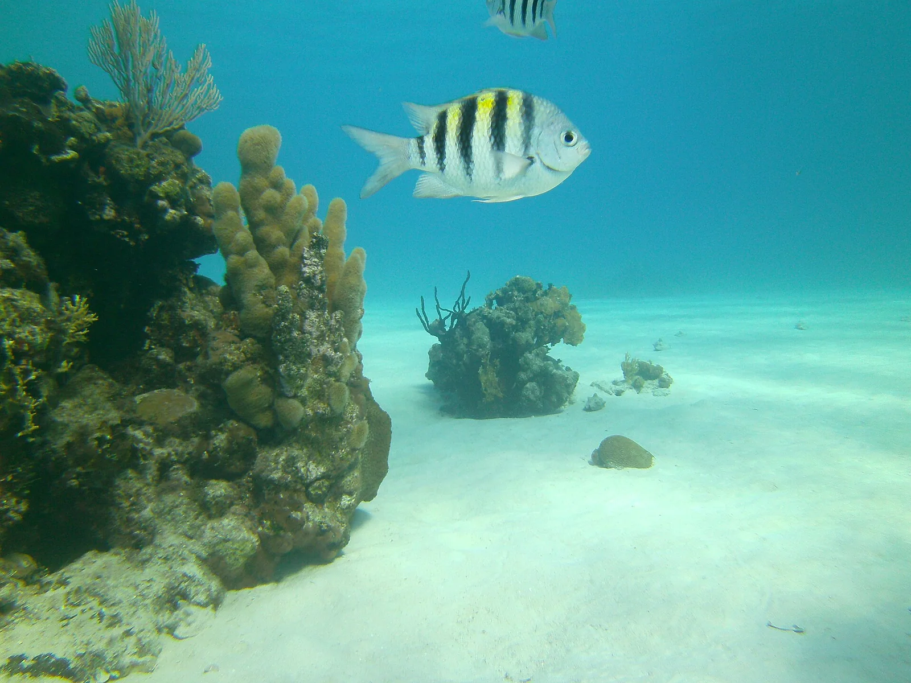

Punta Perdiz — Baie des Cochons
Matanzas, Cuba · snorkeling, plongée, baignade

Côte rocheuse de la baie des Cochons, entre Playa Larga et Playa Girón, où le récif commence à quelques mètres du bord. On y snorkelle et on y plonge directement depuis la rive.
- Lieu
- Matanzas, Cuba
- Niveau
- Débutant
- Activités
- snorkeling, plongée, baignade
- Type d'eau
- Mer / océan
- Coordonnées
- 22.11, -81.12 (position approximative du secteur)
Dangers à connaître
- Rochers calcaires coupants à l’entrée et à la sortie de l’eau.
- Le tombant descend rapidement : garde un œil sur ta profondeur.
Le conseil d'Ocean Buddy
Mets des chaussons : l’entrée se fait depuis des rochers calcaires coupants, puis le fond plonge vite vers le tombant.
Ouvrir dans Ocean Buddy Télécharger sur l'App Store
Source : Fiche Ocean Buddy · septembre 2026 · à vérifier localement.